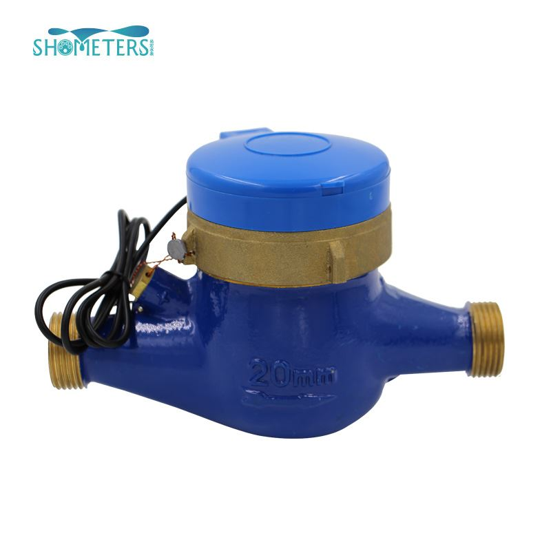

E-mail:
info@sh-meters.comCall Us:
+86 13131984716In normal times, some users find that there is no water in their home, but the pulse signal water meter is still rotating. The rotation of the water meter will increase the water bill at home. In many cases, the main reason for the rotation of the water meter is water leakage. As long as the leak is solved, it can Solve the problem of rotation.
1.No one lives in new households, and the pipelines are easy to gather gas.
This kind of situation is relatively common. New households generally have more complicated pipelines and are prone to water leakage and gas accumulation. For example, the quality of the user's bathroom is not good, and the water leaks after using it for a period of time. Some users are not at home for a long time, and the bathroom pipe is not used for a long time, resulting in a lot of air bags inside, causing water leakage and causing the water meter to rotate.
2. Secondary water supply.
Many communities have secondary water supply. The diameter of municipal water pipes is not large enough, or the water hammer causes the water meter to rotate when the float valve controls the water level. The area of water meter rotation caused by the secondary water supply is very large. To solve this problem, users need to cooperate.
3. The pressure at the control point of the municipal pipe network is low.
When the pressure of the water pipe is at a low level, the water pressure in the pipe is unstable. Therefore, when a user is using water in the same building, other residents will be affected.
4. The internal pipe network of the household is leaking.
The life of the water pipe is limited. When the water pipe is aging, there will naturally be water leakage, or when the water supply pipe is installed, water leakage at the pipe collar, tee, etc. causes the water meter to rotate.
The above is the reason for the rotation of the pulse signal water meter. If you find that the water meter at home is rotating, you first need to check whether the water connection pipes are aging or leaking. You can fix the leaks or replace the new pipes. If it is because If it is caused by municipal pipelines and water supply problems, you need to contact relevant departments.
